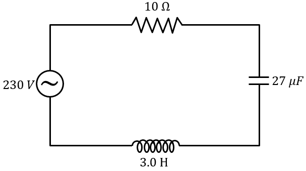

Filter questions
Q1
CHEM-2021-0101-S2-Q052
2021 | 01 Sep | Shift 2
—
Integer
A 50 watt bulb emits monochromatic red light of wavelength of 795 nm. The number of photons emitted per 1020 second by the bulb is x×. The value of x is _____. (Nearest integer) [Given: h = 6.63 × 10-34Js and c= 3.0 × 108 ms−1
Answer: 2
Q2
CHEM-2021-0101-S2-Q058
2021 | 18 Mar | Shift 2
—
Integer
A reaction has a half life of 1 min. The time required for 99.9% completion of the reaction is ___ min. (Round off to the Nearest integer) [Use: ln 2 = 0.69, ln 10 = 2.3 ]
Answer: 10
Q3
CHEM-2021-0101-S2-Q051
2021 | 20 Jul | Shift 2
—
Integer
The wavelength of electrons accelerated from rest through a potential difference of 40 kV is X × 10−12 m. The value of is. (Nearest integer) x Given: Mass of electron = 9.1 × 10−31 kg Charge on an electron = 1.6 × 10−19C Planck's constant = 6.63 × 10−34 Js
Answer: 6
Q4
CHEM-2021-0101-S1-Q052
2021 | 24 Feb | Shift 1
—
Integer
A proton and a Li3 + nucleus are accelerated by the same potential. If λLi and λp denote the de Broglie λLi wavelengths of Li3 + and proton respectively, then the value of is x× 10−1. The value of x λp is _____ (Rounded off to the nearest integer) [Mass of Li3 + = 8.3 mass of proton]

Answer: 2
Q5
CHEM-2021-0101-S1-Q032
2021 | 25 Feb | Shift 1
—
MCQ
The plots of radial distribution functions for various orbitals of hydrogen atom against ' r′ are given below. The correct plot for orbital is: 3s

Answer: C
Q6
CHEM-2021-0101-S1-Q036
2021 | 27 Aug | Shift 1
—
MCQ
The gas ′A′ is having very low reactivity reaches to stratosphere. It is non-toxic and non-flammable but dissociated by UV -radiations in stratosphere. The intermediates formed initially from the gas ′A′ are:
Answer: B
Q7
CHEM-2021-0101-S1-Q058
2021 | 27 Aug | Shift 1
—
Integer
The kinetic energy of an electron in the second Bohr orbit of a hydrogen atom is equal to x ma2. The value of 10 x is ( a0 is radius of Bohr's orbit) 0 (Nearest integer) [Given: π = 3.14 ]

Answer: 3155
Q8
CHEM-2021-0101-S2-Q041
2021 | 27 Aug | Shift 2
—
MCQ
Which one of the following is used to remove most of plutonium from spent nuclear fuel?
Answer: D
Q9
CHEM-2021-0101-S2-Q052
2021 | 27 Aug | Shift 2
—
Integer
The number of photons emitted by a monochromatic (single frequency) infrared range finder of power 1 mW and wavelength of 1000 nm, in 0.1 second is x × 1013. The value of x is (Nearest integer) (h = 6.63 × 10−34 Js, c = 3.00 × 108 ms−1):

Answer: 50
Q10
CHEM-2021-0101-S2-Q033
2021 | 27 Jul | Shift 2
—
MCQ
The number of neutrons and electrons, respectively, present in the radioactive isotope of hydrogen is:-
Answer: C
Q11
CHEM-2021-0101-S1-Q045
2021 | 31 Aug | Shift 1
—
MCQ
The correct order of reactivity of the given chlorides with acetate in acetic acid is:

Answer: C
Q12
CHEM-2022-0101-S2-Q032
2022 | 24 Jun | Shift 2
—
MCQ
The energy of one mole of photons of radiation of wavelength 300 nm is (Given: h = 6.63 × 10−34 J s, NA = 6.02 × 1023 mol−1c = 3 × 108 m s−1 )
Answer: C
Q13
CHEM-2022-0101-S2-Q031
2022 | 25 Jun | Shift 2
—
MCQ
The minimum energy that must be possessed by photons in order to produce the photoelectric effect with platinum metal is: [Given: The threshold frequency of platinum is 1015 s−1 and 10-34Js] 1.3 × h = 6.6 ×
Answer: A
Q14
CHEM-2022-0101-S2-Q056
2022 | 25 Jun | Shift 2
—
Integer
At 345 K, the half life for the decomposition of a sample of a gaseous compound initially at 55.5 kPa was 340 s. When the pressure was 27.8 kPa, the half life was found to be 170 s. The order of the reaction is - [integer answer]
Answer: 0
Q15
CHEM-2022-0101-S1-Q032
2022 | 26 Jun | Shift 1
—
MCQ
If the radius of the 3nd Bohr's orbit of hydrogen atom is r3 and the radius of 4th Bohr's orbit is r4. Then
Answer: B
Q16
CHEM-2022-0101-S1-Q051
2022 | 28 Jun | Shift 1
—
Integer
If the work function of a metal is 6.63 × J, the maximum wavelength of the photon required to remove a photoelectron from the metal is____ nm. Nearest integer) [Given: h = 6.63 × 10−34 J s, and c = 3 × 108 m s−1 ]
Answer: 300
Q17
CHEM-2022-0101-S2-Q056
2022 | 28 Jun | Shift 2
—
Integer
A radioactive element has a half life of 200 days. The percentage of original activity remaining after 83 days is____(Nearest integer) (Given: antilog 0.125 = 1.333, antilog 0.693 = 4.93 )
Answer: 75
Q18
CHEM-2022-0101-S1-Q038
2022 | 29 Jun | Shift 1
—
MCQ
Match List-I with Match List-II List-I List-II (Metal) (Application)
Answer: A
Q19
CHEM-2023-0101-S1-Q058
2023 | 01 Feb | Shift 1
—
Integer
A and B are two substances undergoing radioactive decay in a container. The half life of A is 15 min and that of B is 5 min. If the initial concentration of B is 4 times that of A and they both start decaying at the same time, how much time will it take for the concentration of both of them to be same? ________min.

Answer: 15
Q20
CHEM-2023-0101-S2-Q031
2023 | 06 Apr | Shift 2
—
MCQ
If the radius of the first orbit of hydrogen atom is a0, then de Broglie’s wavelength of electron in 3rd orbit is
Answer: C
Q21
CHEM-2023-0101-S2-Q032
2023 | 08 Apr | Shift 2
—
MCQ
Henry Moseley studied characteristic -ray spectra of elements. The graph which represents his observation X correctly is Given v = Frequency of X-ray emitted Atomic number Z =

Answer: C
Q22
CHEM-2023-0101-S1-Q032
2023 | 11 Apr | Shift 1
—
MCQ
Given below are two statements: one is labelled as Assertion A and the other is labelled as Reason R: Assertion A: In the photoelectric effect, the electrons are ejected from the metal surface as soon as the beam of light of frequency greater than threshold frequency strikes the surface. Reason R: When the photon of any energy strikes an electron in the atom, transfer of energy from the photon to the electron takes place. In the light of the above statements, choose the most appropriate answer from the options given below:
Answer: B
Q23
CHEM-2023-0101-S1-Q033
2023 | 12 Apr | Shift 1
—
MCQ
Values of work function for a few metals are given below (W0) Metal Li Na K Mg Cu Ag W0 2.42 2.3 2.25 3.7 4.8 4.3 eV The number of metals which will show photoelectric effect when light of wavelength 400 nm falls on it is _____ Given: h = 6.6 × 10–34 J s 108 ms–1 c = 3 × e = 1.6 × 10–19 C
Answer: C
Q24
CHEM-2023-0101-S1-Q032
2023 | 13 Apr | Shift 1
—
MCQ
The energy of an electron in the first Bohr orbit of hydrogen atom is −2.18 × 10−18 J Its energy in the third Bohr orbit is _______.
Answer: D
Q25
CHEM-2023-0101-S1-Q031
2023 | 24 Jan | Shift 1
—
MCQ
It is observed that characteristic X-ray spectra of elements show regularity. When frequency to the power 'n' i.e. vn of X-rays emitted is plotted against atomic number Z, the following graph is obtained. The value of 'n' is

Answer: C
Q26
CHEM-2023-0101-S1-Q051
2023 | 24 Jan | Shift 1
—
Integer
If wavelength of the first line of the Paschen series of hydrogen atom is 720 nm, then the wavelength of the second line of this series is _______ nm. (Nearest integer)
Answer: 492
Q27
CHEM-2023-0101-S1-Q031
2023 | 29 Jan | Shift 1
—
MCQ
The shortest wavelength of hydrogen atom in Lyman series is λ. The longest wavelength in Balmer series of He+ is
Answer: B
Q28
CHEM-2023-0101-S2-Q031
2023 | 29 Jan | Shift 2
—
Integer
Assume that the radius of the first Bohr orbit of hydrogen atom is 0.6Å. The radius of the third Bohr orbit of He+ is _____ picometer. (Nearest Integer)
Answer: 2
Q29
CHEM-2023-0101-S1-Q051
2023 | 30 Jan | Shift 1
—
Integer
The energy of one mole of photons of radiation of frequency 2 × 1012 Hz in Jmol−1 is _____. (Nearest integer) 10-34Js 1023 mol−1) (Given: h = 6.626 × NA = 6.022 ×
Answer: 798
Q30
CHEM-2023-0101-S2-Q057
2023 | 31 Jan | Shift 2
—
Integer
An organic compound [A](C4H11 N), shows optical activity and gives N2 gas on treatment with HNO2. The compound reacts with producing a compound which is soluble in. The structure of is: [A] PhSO2 Cl KOH A (1) (2) (3) (4)
Answer: 25
Q31
CHEM-2024-0101-S1-Q031
2024 | 01 Feb | Shift 1
—
MCQ
According to the wave-particle duality of matter by de-Broglie, which of the following graph plot presents most appropriate relationship between wavelength of electron λ and momentum of electron p?

Answer: A
Q32
CHEM-2024-0101-S1-Q058
2024 | 01 Feb | Shift 1
—
Integer
The ratio of 14C in a piece of wood is 1 part that of atmosphere. If half life of 14C is 5730 years, the age of 12C 8 wood sample is..... years.
Answer: 17190
Q33
CHEM-2024-0101-S2-Q033
2024 | 01 Feb | Shift 2
—
MCQ
Given below are two statements: Statement (I): A π bonding MO has lower electron density above and below the inter-nuclear axis. Statement (II): The π* antibonding MO has a node between the nuclei. In light of the above statements, choose the most appropriate answer from the options given below:
Answer: C
Q34
CHEM-2024-0101-S2-Q051
2024 | 01 Feb | Shift 2
—
Integer
10 mL of gaseous hydrocarbon on combustion gives 40 mL of CO2g and 50 mL of water vapour. Total number of carbon and hydrogen atoms in the hydrocarbon is _______.
Answer: 14
Q35
CHEM-2024-0101-S1-Q034
2024 | 05 Apr | Shift 1
—
MCQ
The statement(s) that are correct about the species O2−, F−, Na+ and Mg2+.
Answer: C
Q36
CHEM-2024-0101-S2-Q057
2024 | 05 Apr | Shift 2
—
Integer
The fusion of chromite ore with sodium carbonate in the presence of air leads to the formation of products A and along with the evolution of. The sum of spin-only magnetic moment values of and is ______ B CO2 A B B.M. (Nearest integer) [Given atomic number: C: 6, Na: 11, O: 8, Fe: 26, Cr: 24 ]

Answer: 6
Q37
CHEM-2024-0101-S2-Q052
2024 | 06 Apr | Shift 2
—
Integer
For hydrogen atom, energy of an electron in first excited state is −3.4eV, K. E. of the same electron of hydrogen atom is xeV. Value of x is ______ ×10−1eV. (Nearest integer)
Answer: 34
Q38
CHEM-2024-0101-S1-Q039
2024 | 29 Jan | Shift 1
—
MCQ
Appearance of blood red colour, on treatment of the sodium fusion extract of an organic compound with in presence of concentrated indicates the presence of element/s FeSO4 H2 SO4
Answer: C
Q39
CHEM-2024-0101-S2-Q031
2024 | 30 Jan | Shift 2
—
MCQ
Given below are two statements: Statement - I: Along the period, the chemical reactivity of the element gradually increases from group to 1 group 18. Statement - II: The nature of oxides formed by group 1 element is basic while that of group 17 elements is acidic. In the the light above statements, choose the most appropriate from the questions given below:
Answer: C
Q40
CHEM-2024-0101-S2-Q044
2024 | 30 Jan | Shift 2
—
MCQ
Alkaline oxidative fusion of MnO2 gives "A " which on electrolytic oxidation in alkaline solution produces B. A and B respectively are: - 2 - -
Answer: B
Q41
CHEM-2024-0101-S1-Q058
2024 | 31 Jan | Shift 1
—
Integer
The total number of hydrogen atoms in product A and product B is__________.
Answer: 10
Q42
CHEM-2025-0101-S1-Q051
2025 | 22 Jan | Shift 1
—
Integer
Radius of the first excited state of Helium ion is given as: a0 → radius of first stationary state of hydrogen atom. (1) r = 4a0 (2) r = 2a0 a0 a0 (3) r = 2 (4) r = 4
Answer: 2
Q43
CHEM-2025-0101-S2-Q042
2025 | 22 Jan | Shift 2
—
MCQ
A light source of wavelength λ illuminates a metal surface and electrons are ejected with maximum kinetic energy of 2 eV. If the same surface is illuminated by a light source of wavelength λ 2, then the maximum kinetic energy of ejected electrons will be (The work function of metal is 1 eV )
Answer: D
Q44
CHEM-2025-0101-S1-Q034
2025 | 23 Jan | Shift 1
—
MCQ
A sub-atomic particle of mass kg is moving with a velocity 2.21 × m/s. Under the matter wave consideration, the particle will behave closely like (h = 6.63 × 10−34 J. s)
Answer: D
Q45
CHEM-2025-0101-S1-Q059
2025 | 23 Jan | Shift 1
—
Integer
Given below are two statements: Statement I: In Lassaigne's test, the covalent organic molecules are transformed into ionic compounds. Statement II: The sodium fusion extract of an organic compound having N and S gives prussian blue colour with FeSO4 and Na4 [Fe(CN)6] In the light of the above statements, choose the correct answer from the options given below. (1) Statement I is true but Statement II is false (2) Both Statement I and Statement II are false (3) Both Statement I and Statement II are true (4) Statement I is false but Statement II is true

Answer: 1
Q46
CHEM-2025-0101-S2-Q040
2025 | 23 Jan | Shift 2
—
MCQ
Given below are two statements. One is labelled as Assertion
Answer: A
Q47
CHEM-2025-0101-S2-Q045
2025 | 23 Jan | Shift 2
—
MCQ
In photoelectric effect an em-wave is incident on a metal surface and electrons are ejected from the surface. If the work function of the metal is 2.14 eV and stopping potential is 2 V, what is the wavelength of the em- wave? (Given hc = 1242eVnm where h is the Planck's constant and c is the speed of light in vaccum.)
Answer: A
Q48
CHEM-2025-0101-S2-Q032
2025 | 24 Jan | Shift 2
—
MCQ
In photoelectric effect, the stopping potential (V0)v/s frequency (ν) curve is plotted. ( h is the Planck's constant and is work function of metal )
Answer: B
Q49
CHEM-2025-0101-S2-Q046
2025 | 24 Jan | Shift 2
—
MCQ
The ratio of the power of a light source S1 to that the light source S2 is 2. S1 is emitting 2 × 1015 photons per second at 600 nm. If the wavelength of the source is 300 nm, then the number of photons per second S2 emitted by S2 is...... ×1014.
Answer: Option 5
Q50
CHEM-2025-0101-S2-Q051
2025 | 24 Jan | Shift 2
—
Integer
For hydrogen atom, the orbital/s with lowest energy is/are: (A) 4 s (B) 3px (C) 3 dx2−y2 (D) 3 dz2 (E) 4pz Choose the correct answer from the options given below: (1) (B), (C) and (D) only (2) (A) and (E) only (3) (A) only (4) (B) only
Answer: 1
Q51
CHEM-2025-0101-S1-Q032
2025 | 28 Jan | Shift 1
—
MCQ
Choose the correct nuclear process from the below options [p: proton, n: neutron, e−: electron, e+: positron, v: neutrino, ̄v: antineutrino] e+ e+ v
Answer: D
Q52
CHEM-2025-0101-S1-Q045
2025 | 28 Jan | Shift 1
—
MCQ
A proton of mass ' mp ' has same energy as that of a photon of wavelength ' λ '. If the proton is moving at non- relativistic speed, then ratio of its de Broglie wavelength to the wavelength of photon is.
Answer: D
Q53
CHEM-2025-0101-S2-Q057
2025 | 28 Jan | Shift 2
—
Integer
For bacterial growth in a cell culture, growth law is very similar to the law of radioactive decay. Which of the following graphs is most suitable to represent bacterial colony growth? Where N - Number of Bacteria at any time, N0 - Initial number of Bacteria. (1) (2) (3) (4)

Answer: 3
Q54
CHEM-2025-0101-S1-Q032
2025 | 29 Jan | Shift 1
—
MCQ
If λ and K are de Broglie wavelength and kinetic energy, respectively, of a particle with constant mass. The correct graphical representation for the particle will be
Answer: B
Q55
CHEM-2025-0101-S2-Q035
2025 | 29 Jan | Shift 2
—
MCQ
The number of spectral lines emitted by atomic hydrogen that is in the 4th energy level, is
Answer: C
Q56
CHEM-2025-0101-S2-Q037
2025 | 29 Jan | Shift 2
—
MCQ
In an experiment with photoelectric effect, the stopping potential,
Answer: D